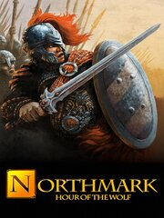

Northmark: Hour of the Wolf
Northmark: Hour of the Wolf
Detalles
|  | |
| Tiempo de juego | 1h 1m 0s |
| Última actividad | 08/05/2015 15:07:38 |
| Añadido | 23/07/2021 17:30:20 |
| Modificado | Nunca |
| Estado de finalización | Jugado |
| Librería | Steam |
| Fuente | Steam |
| Plataforma | PC (Windows) |
| Fecha de lanzamiento | 02/08/2014 |
| Puntuación de la Comunidad | 78 |
| Puntuación de la Crítica | |
| Puntuación de usuario | |
| Género | Adventure Indie RPG |
| Desarrollador | Rake in Grass |
| Editor | Rake in Grass |
| Característica | Achievements Cloud Saves Single Player Trading Cards |
| Enlaces | Community Hub Discussions Guides News Store Page PCGamingWiki Achievements |
| Tag | |
Descripción
Experience all the thrills of adventure in Northmark: Hour of the Wolf, a card-based RPG. Choose to become a mighty warrior, cunning mage or powerful druid as you fight for glory and survival in arena combat. Explore every corner of the kingdom from fiery deserts to deep forests and cold mountain peaks and Journey to the kingdoms of the elves and dwarves.
But beware! Danger waits at every turn as you investigate the chilling mystery that threatens your homeland. Can you defeat assassins, thieves and hideous monsters? And who is the enigmatic stranger known only as The Wolf? Find out in Northmark: Hour of the Wolf.
Main features:
But beware! Danger waits at every turn as you investigate the chilling mystery that threatens your homeland. Can you defeat assassins, thieves and hideous monsters? And who is the enigmatic stranger known only as The Wolf? Find out in Northmark: Hour of the Wolf.
Main features:
- Adventure across the lands of Northmark.
- Enjoy an original battle system featuring over 180 beautiful cards.
- Fight for honour, glory... and gold.
- Save your homeland from the plot that threatens to overwhelm it.
- Battle in the arena, or fight for your life against powerful assassins, hideous monsters and mighty warriors.
- Journey from the cold mountain peaks to the desert wastes and deep forests.
- Explore great cities, lost ruins and the ancient mystic sites sacred to the druids and elves.
- Grow more powerful as you find the best battle tactics.
- Become the greatest hero Northmark has ever known - you know it's your destiny!